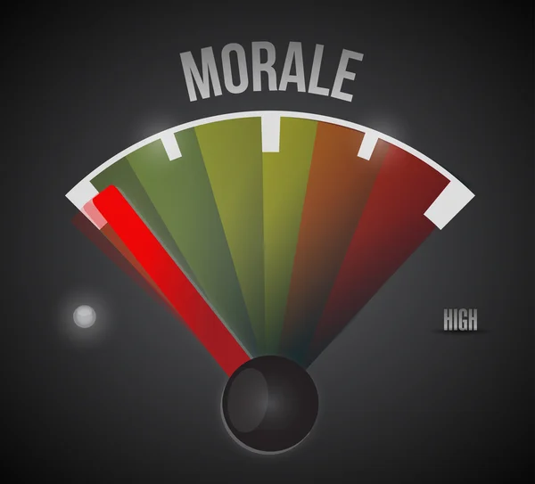
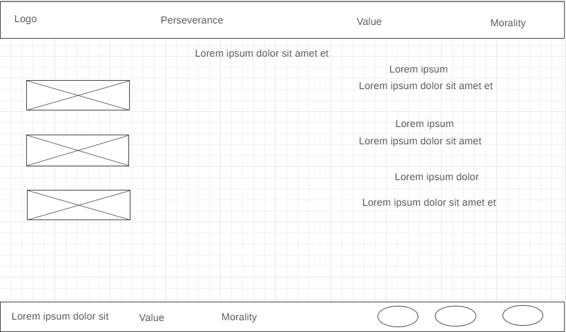
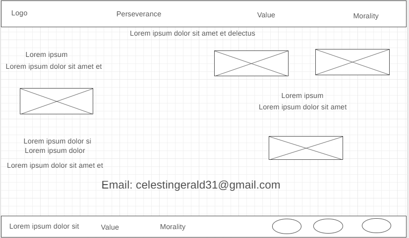

Overview
Purpose
My goal for this site is to share with you how important it is nowadays, to talk about perseverance and about value and morals which is a very important thing to make balance in a world that seems a bit disturbed. As this is a site that will talk about perseverance and morality and value, I think that people who are looking for comfort and want to persevere in earthly things and spiritual things can come to my site they will find some comfort. I think that all visitors will expect questions that will create excitement in them that and keep them focused on the site such as: What do I have to do to be successful in my life? How can I acquire marital values? What is it to be moral? One of the best activities that the visitor wants to complete on my site is to educate and inform you about the moral things that will help you turn to the path that leads you to the eternal life that Jesus Christ our Savior promised to people who follow our God The first information that is necessary to perform the actions proposed by my site is that this person should recognize the good and the bad. And he should know when a person does something wrong there is always a consequence that comes with it. The idea of visiting my site rather than another to get information or take actions is simple. I have to say that in life there are two things that allow all men to stay alive and have hope in this life. First is to recognize that there is good and bad while we live on this earth, we do good and bad things for sure. But when we do bad things, God punishes us in some way and the bad things we do prevent us from returning to live in the presence of God. And every Human not to say 70 percent believe in a God who gives eternal life so we should find a way to purify ourselves and make us qualified to return to the presence of Our God. So, this is where my site comes in because you will find things that will keep you connected to God and spiritual things. You will also find some step-by-step guides on how to teach them with your family and children in whatever your past. The objective is to educate and inform you about the moral things that will help you turn to the path that leads you to the eternal life that Jesus Christ our Savior promised to people who follow our God. So, we must be persistent and firm on the path that leads us to return to live in the Celestial Kingdom. One thing is for certain: the more the fundamental question of the relationships between morality and the law is outside the scope of this communication. We will see and comprehend that morality appears in various forms in the motivation of life decisions, particularly judicial decisions. As a result, the value reflects a thing or person's qualitative, financial, symbolic, or quantitative value. In the modern scriptures written by ancient prophets living in the continent of America, there is a prophet from the book of Mormon that I love very much Moroni said something very important I will share with you: Moroni 8:3-4 said:” 3 I am mindful of you always in my prayers, continually praying unto God the Father in the name of his Holy Child, Jesus, that he, through his infinite goodness and grace, will keep you through the endurance of faith in his name to the end. 4 And now, my son, I speak unto you concerning that which grieveth me exceedingly; for it grieveth me that there should disputations rise among you”? .
Audience
My audience for this site targets the public and is addressed category of age from 11 years to x will be able to visit this site and find things that will form you in life on the level of value and morals. This site is for everyone but especially for families who need to do a family activity and want to change their mindset. You do not need to pay any money to subscribe to this site nor be rich or poor you could learn something very important who going to change your life spiritually. They can access the website on a desktop, laptop, or mobile device, all they need is an internet connection on their devices. Moreover, they do not need a fast internet connection because of our website.
Branding
Website Logo
Style Guide
Color Palette
Palette URL: https://coolors.co/385062-b1af9c-dae4d8-6c6b6b-bd9999| Primary | Secondary | Accent 1 | Accent 2 |
|---|---|---|---|
| [#385062] | [#b1af9c] | [#dae4d8] | [#bd9999] |
Typography
Heading Font: Montserrat
Paragraph Font: Lato
Normal paragraph example
This site is one of the best sites that train and educate you and guide you in the right direction. We are operational since January 10, 2005, and since then it has had the visit of more than 100000 thousand visitors and learned some very important things that have changed their lives.
Colored paragraph example
The topics vary depending on what you are looking for and also on your age and understanding of the three keywords Perseverance, Value, and Morality. No matter what type of adventure you had before that made you lose a little patience and this site can make it happen and make a huge difference in your life.
Navigation
Site Map
Content
Home page
Perseverance comes with the verb persevere in the definition of the word perseverance which means to remain firm in one's commitment to be faithful to God's commandments despite the temptations of opposition and adversity. In Matthew 10:22 he who endures to the end will be saved.
Images for the Home page


Value
According to the Bible which is the word of God: Virtue has been defined as the spiritual energy that the believer needs to reach the Celestial glory. So glory and virtue are both fruits of God's calling. In 2 Peter 1:3, Is He not the One who has called us by glory and virtue
Images for the Page 2


Morality
The term morality comes from the Latin mores which means morals, it means a set of norms and rules relating to good and evil, specific to a society or a group. In philosophy, morality tries to define what is the purpose of human action to deduce the conduct to be held.
Images for the Page 3



Wireframes
Create three wireframes for your site. One for each page and list them here
Home
Value
[Any additional details about page 2 that the wireframe does not make clear]
Morality
[Any additional details about page 3 that the wireframe does not make clear]
